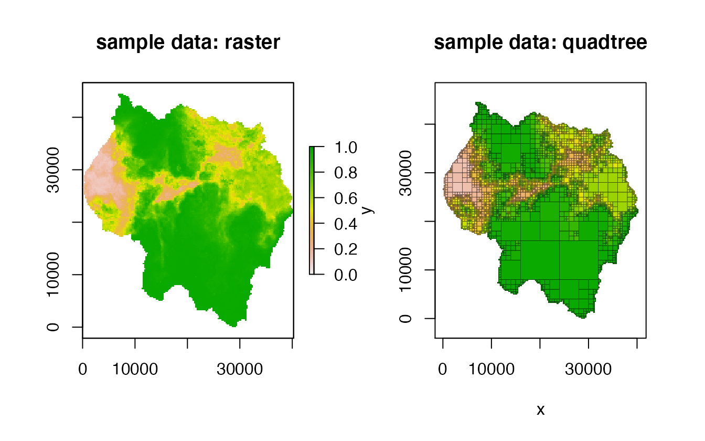
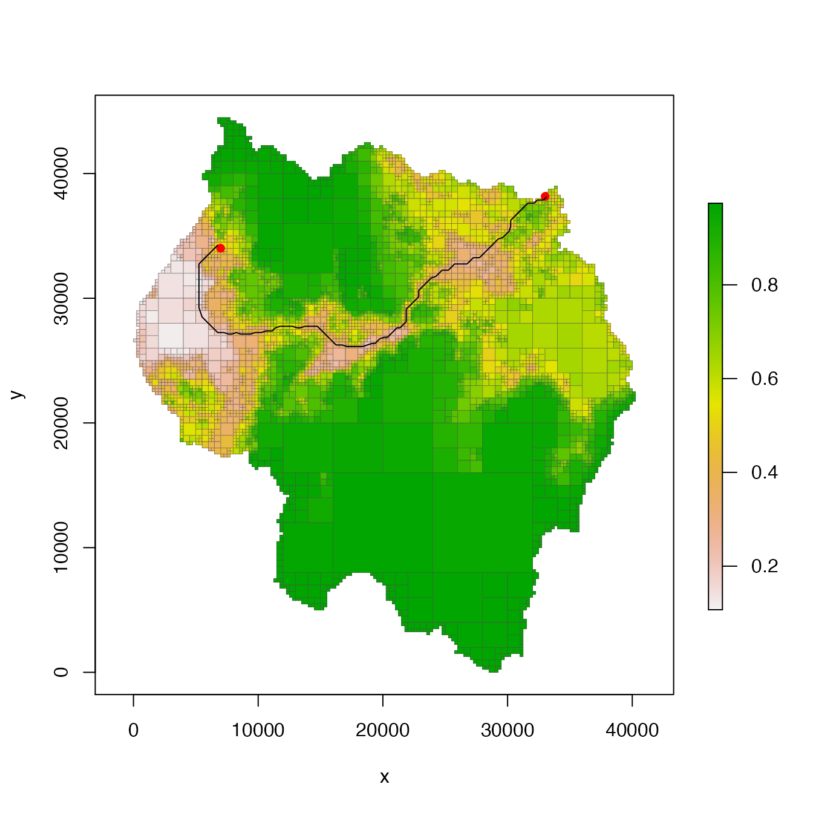
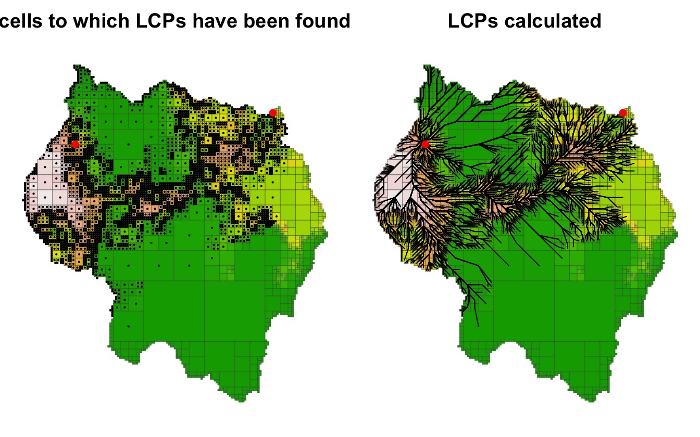
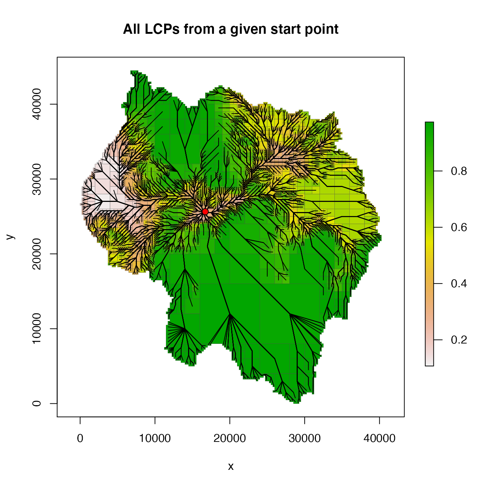
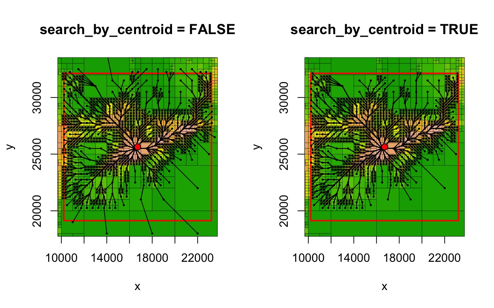
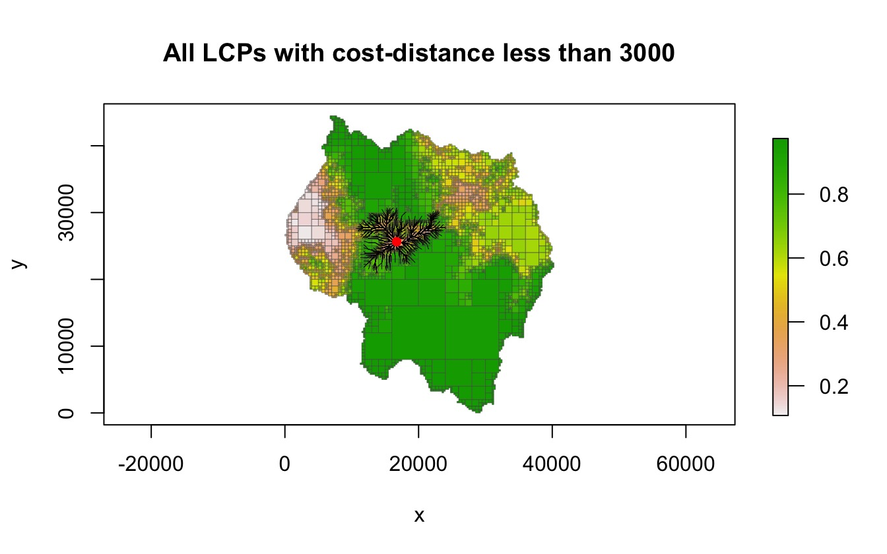

vignettes/quadtree-lcp.Rmd
quadtree-lcp.RmdThis vignette goes over the process of finding least-cost paths (LCPs) using a quadtree as a resistance surface. Sample data provided with the quadtree package is used to construct the quadtree used as a resistance surface in the examples.
library(quadtree)
library(raster)
data(habitat)
rast <- habitat
qt <- quadtree(rast, .04, split_method = "sd")
par(mfrow = c(1, 2))
plot(rast, zlim = c(0, 1), main = "sample data: raster")
plot(qt, crop = TRUE, na_col = NULL, border_lwd = .3, legend = FALSE,
zlim = c(0, 1), main = "sample data: quadtree")
Surfaces like rasters are often used for calculating least-cost paths (LCPs). In this case, the underlying raster surface is assumed to represent the degree to which the landscape “resists” movement. The goal, then, is to find the path between two points such that the least amount of resistance is accumulated.
The LCP is estimated by treating the surface (whether it be a raster or a quadree) as a network and then using an algorithm for finding the shortest path on a network. Each cell centroid is considered to be a node, and two nodes are connected by an edge if they are adjacent to one another. Each edge has an assigned cost which is derived from the underlying surface. Edges will always travel through two cells. In the quadtree package, then, the cost is determined by first dividing the edge into segments two so that each segment falls in a single cell. The length of each segment is multiplied by the cost of the cell, and then these two values are added together to determine the total cost of the edge. Once the network has been constructed, we can use Djikstra’s algorithm to find the least-cost path between two nodes.
Dijkstra’s algorithm essentially builds a tree data structure, where the starting node is the root of the tree. It iteratively builds the tree structure, and in each iteration it adds the node that is “closest” to the current tree - that is, it chooses the node which is easiest to get to from the current structure. The result is that even if only one LCP is desired, LCPs to other nodes are also calculated in the process. To find a path to a specific node, then, this tree is iteratively built, and once the destination node is reached, the path to that node is returned.
It’s important to note that variable cell size of a quadtree will result in least-cost paths being distorted to some degree, and this distortion will increase as cell size increases. It is important for the user to be aware of this distortion - depending on the application, this distortion may or may not cause a meaningful amount of error, and it is up to the user to determine whether the distortion caused by calculating LCPs on a quadtree will significantly affect the analysis being performed.
LcpFinder classThe LcpFinder class is a wrapper class for a C++ object that actually performs the calculations. The C++ object internally stores the results as a tree-like structure. Finding the LCP to a given point can be seen as a two-step process. First, construct the tree structure as described above. Second, starting from the destination node, travel up the tree, keeping track of the sequence of nodes passed through, until the root (the starting node) is reached. This sequence of nodes (in reverse, since we started from the destination node) is the LCP to that point.
Once the tree has been constructed, LCPs can be found to any of the of the child nodes without further computation. This allows for efficient computation of multiple LCPs. The LCP finder saves state - whenever an LCP is asked to be calculated, it first checks whether or not a path has been found to that node already - if so, it simply returns the path using the process described above. If not, it builds out the existing tree until the desired node has been reached.
LcpFinder object using lcp_finder()
A LcpFinder object can be constructed from a quadtree by using the lcp_finder() function. It requires as input a Quadtree object and a two-element numeric vector representing the starting point.
start_pt <- c(6989, 34007)
lcpf <- lcp_finder(qt, start_pt)
lcpf
#> class : LcpFinder
#> start point : (6989, 34007)
#> search limits : 0, 64000, 0, 64000 (xmin, xmax, ymin, ymax)
#> # of paths found : 0There are also three optional parameters for the lcp_finder() function: xlim and ylim, and search_by_centroids. If xlim and ylim are specified, the LcpFinder object restricts its search area to nodes that fall within the specified limits. This can be useful for at least two reasons. First, it is sometimes desirable to constrain an LCP to be within certain “reasonable” limits. For example, if two points are separated by a long barrier, this could be used to prevent the path from going all the way around the barrier (which may result in an unrealistically long path, depending on the application). Second, it can also be used to decrease computation time by decreasing the number of nodes in the network.
The search_by_centroid parameter essentially defines what it means for a cell to be “in” the box defined by xlim and ylim. If FALSE (the default), any cell that overlaps with the box is included. If TRUE, a cell is only included if its centroid falls inside the box. This is a subtle but important distinction. If cells are included if they overlap with the box, it is likely that cells will be included whose centroid falls outside the box. Since all LCPs are found using the cell centroids, this means that LCPs could travel outside of the user-defined box. The difference between the two is illustrated later on in this vignette, when find_lcps() is discussed.
Note that when a LcpFinder object is created, no paths have been found yet. Paths are found by using the find_lcp() and find_lcps() functions.
LcpFinder object.Two slightly different ways of calculating LCPs are provided that differ in their stop criteria - that is, the condition on which the tree stops being built.
find_lcp()
find_lcp() finds a path to a specific point. First, it checks whether a LCP to that point has been calculated. If so, it returns the path. If not, it performs Dijkstra’s algorithm, and as soon as that node has been added to the tree, the algorithm stops and the LCP is returned.
start_pt <- c(6989, 34007)
end_pt <- c(33015, 38162)
# create the LCP finder object and find the LCP
lcpf <- lcp_finder(qt, start_pt)
path <- find_lcp(lcpf, end_pt)
# plot the LCP
plot(qt, crop = TRUE, na_col = NULL, border_col = "gray30", border_lwd = .3)
points(rbind(start_pt, end_pt), pch = 16, col = "red")
lines(path[, 1:2], col = "black")
As noted before, however, Dijkstra’s algorithm finds many other LCPs on the way to finding a specific LCP. For example, showing the summary of the LcpFinder object shows that many paths have been found.
lcpf
#> class : LcpFinder
#> start point : (6989, 34007)
#> search limits : 0, 64000, 0, 64000 (xmin, xmax, ymin, ymax)
#> # of paths found : 3880The summarize_lcps() function can be used to return a summary data frame with one row per LCP found. Each row gives information on the destination cell and the cost and distance of the LCP to reach that cell.
head(summarize_lcps(lcpf))
#> id xmin xmax ymin ymax value area lcp_cost lcp_dist
#> 1 5797 11750 12000 11250 11500 0.974000 62500 12972.13 26804.27
#> 2 5793 11750 12000 11500 11750 0.973000 62500 12728.76 26554.27
#> 3 5791 11750 12000 11750 12000 0.973000 62500 12485.51 26304.27
#> 4 5824 12000 16000 8000 12000 0.964375 16000000 14330.39 28239.99
#> 5 5744 11500 11750 12000 12250 0.973000 62500 12578.08 26399.26
#> 6 5745 11750 12000 12000 12250 0.972000 62500 12334.95 26149.26The cells to which paths have been found as well as the paths to reach those cells can be plotted using the points() and lines() functions with the LcpFinder object.
par(mfrow = c(1, 2), mar = c(.5,.5,2,.5))
plot(qt, crop = TRUE, na_col = NULL, border_col = "gray30", border_lwd = .3,
legend = FALSE, axes = FALSE,
main = "cells to which LCPs have been found")
points(lcpf, pch=16, cex=.3)
points(rbind(start_pt, end_pt), pch = 16, col = "red")
plot(qt, crop = TRUE, na_col = NULL, border_col = "gray30", border_lwd = .3,
legend = FALSE, axes = FALSE, main = "LCPs calculated")
lines(lcpf)
points(rbind(start_pt, end_pt), pch = 16, col = "red")
find_lcps()
find_lcps() can be used to find all possible LCPs. In addition, a maximum cost-distance can optionally be provided so that only LCPs with a cost-distance less than the specified value are found. Instead of returning a single path, it returns the output of summarize_lcps(), providing a summary of each path found.
It should be noted that while find_lcps() does not return individual LCPs, it still calculates the LCPs to each point, and find_lcp() can be used to retrieve individual paths. As stated before, when find_lcp() is run, the LcpFinder object first checks to see if the path has been calculated already - if so, it simply returns the path without having to perform further calculations.
Finding all paths
The following example uses find_lcps to generate all LCPs from the starting point.
start_pt <- c(16715, 25634)
lcpf <- lcp_finder(qt, start_pt)
paths <- find_lcps(lcpf)
plot(qt, crop = TRUE, na_col = NULL, border_col = "gray30", border_lwd = .3,
main = "All LCPs from a given start point")
lines(lcpf)
points(start_pt[1], start_pt[2], col = "black", bg = "red", pch = 21, cex = 1.2)
An important point to make is that find_lcps with no restrictions will find all paths within the previously specified search limit (i.e. the xlim and ylim parameters of lcp_finder().) As discussed above, the search_by_centroid parameter also plays a role in determining which cells are included in the search area, as demonstrated in the following example.
start_pt <- c(16715, 25634)
dist <- 6500
xlim <- c(start_pt[1] - dist, start_pt[1] + dist)
ylim <- c(start_pt[2] - dist, start_pt[2] + dist)
lcpf1 <- lcp_finder(qt, start_pt, xlim, ylim, search_by_centroid = FALSE)
paths1 <- find_lcps(lcpf1)
lcpf2 <- lcp_finder(qt, start_pt, xlim, ylim, search_by_centroid = TRUE)
paths2 <- find_lcps(lcpf2)When plotted, it can be seen that when search_by_centroid is FALSE, paths are included to cells whose centroid falls outside the specified box.
par(mfrow = c(1, 2))
plot(qt, na_col = NULL, border_lwd = .3, legend = FALSE, xlim = xlim,
ylim = ylim, main = "search_by_centroid = FALSE")
rect(xlim[1], ylim[1], xlim[2], ylim[2], border = "red", lwd = 2)
lines(lcpf1)
points(lcpf1, pch=16, cex=.4)
points(start_pt[1], start_pt[2], col = "black", bg = "red", pch = 21, cex = 1.2)
plot(qt, na_col = NULL, border_lwd = .3, legend = FALSE, xlim = xlim,
ylim = ylim, main = "search_by_centroid = TRUE")
rect(xlim[1], ylim[1], xlim[2], ylim[2], border = "red", lwd = 2)
lines(lcpf2)
points(lcpf2, pch=16, cex=.4)
points(start_pt[1], start_pt[2], col = "black", bg = "red", pch = 21, cex = 1.2)
Finding all paths under a given cost-distance threshold
As stated before, a value can be passed to the limit parameter, which will restrict the LcpFinder to only finding paths less than that value. In the following example, all LCPs with a total cost less than 3000 are found.
lcpf <- lcp_finder(qt, start_pt)
paths <- find_lcps(lcpf, limit = 3000)
plot(qt, crop = TRUE, na_col = NULL, border_col = "gray30", border_lwd = .3,
main = "All LCPs with cost-distance less than 3000")
lines(lcpf)
points(start_pt[1], start_pt[2], col = "red", pch = 16)
A very important note to make is that once the LCP tree is calculated, it never gets smaller. The implication of this is that great care is needed if using find_lcps() more than once on a single LcpFinder object.
For example, in the following example, find_lcps() is used to find all paths with a cost-distance of 3000 or less. It is then used again in an attempt to find all paths with a cost-distance of 1000 or less. However, this will result in incorrect results, since paths with a cost-distance greater than 1000 have already been calculated, and as mentioned before, the tree never gets smaller.
start_pt <- c(16715, 25634)
lcpf <- lcp_finder(qt, start_pt)
paths1 <- find_lcps(lcpf, limit = 3000)
nrow(paths1)
#> [1] 833
paths2 <- find_lcps(lcpf, limit = 1000)
nrow(paths2) # same as for paths1!!!
#> [1] 833In order to find the LCPs with cost-distance less than 1000, we would need to create a new LcpFinder object using lcp_finder().